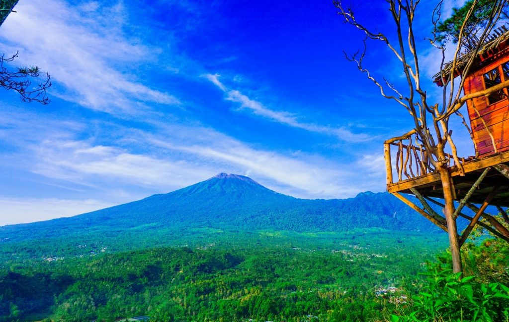
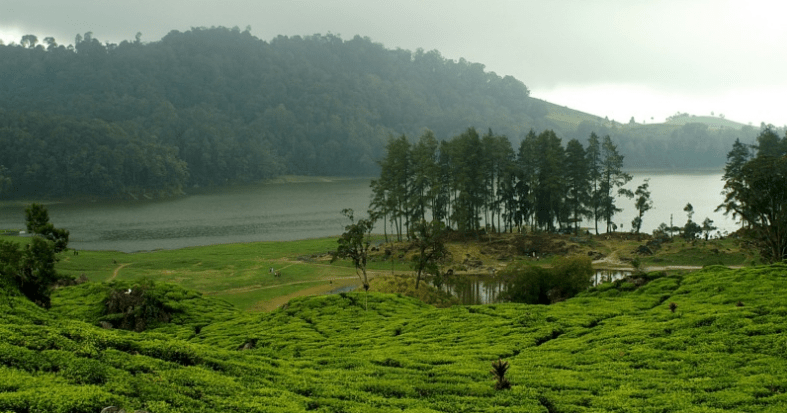
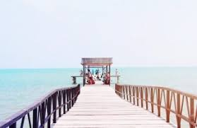

|
Bukit Kukusan  |
|
Bukit Kukusan menawarkan pemandangan alam nan hijau untuk merelaksasi pikiran. Anda bisa bersantai bersama teman atau keluarga dengan menikmati suasana hijau di sekitar Bukit Kukusan. Menyaksikan kegagahan Gunung Slamet setinggi 3.428 mdpl dari gardu pandang akan membuat Anda betah berlama-lama. Tak hanya menampilkan pemandangan berupa perbukitan, hamparan sawah dan suasana hijau saja, Bukit Kukusan juga menjadi favorit traveler malam hari. Anda bisa mengajak si dia menikmati suasana romantis dengan menyaksikan jutaan bintang dari Bukit Kukusan. |
|
Telaga Rengganis  |
|
Telaga yang memiliki luas hingga 1 hektare ini berlokasi di Desa Gapura, Kecamatan Watukumpul atau sekitar 60 kilometer dari pusat kota Pemalang. Meski harus menempuh perjalanan cukup jauh, banyak wisatawan yang tak menyesal sebab telaga memiliki daya pikat. Air di Telaga Rengganis sangat jernih dilengkapi pohon-pohon pinus di sekelilingnya. Pemandangan alam yang indah tersebut berpadu dengan panorama bukit hijau. Tak heran kalau banyak pengunjung memilih bermalam di sekitar telaga dengan mendirikan tenda. Yuk, menikmati keindahan senja di Telaga Rengganis yang memukau! |
|
Pantai Widuri  |
|
Kabupaten Pemalang juga memiliki obyek wisata berupa pantai lho! Kalau Anda berada di kota ini,
jangan lupa untuk singgah sejenak di Pantai Widuri. Akses yang mudah dan dekat dengan kota membuat
Pantai Widuri menjadi ikon wisata Pemalang. Toh, fasilitas yang ada di kawasan pantai sudah lengkap
sehingga Anda tidak perlu khawatir lagi.Tak hanya bisa menikmati hembusan angin sepoi-sepoi atau bermain
di hamparan pasir Pantai Widuri, Anda juga bisa mengajak si kecil bermain wahana air di Widuri Water Park
yang ada di kawasan ini. Jangan lupa mengajak seluruh anggota keluarga menikmati santapan seafood di obyek
wisata Pemalang ini!
|